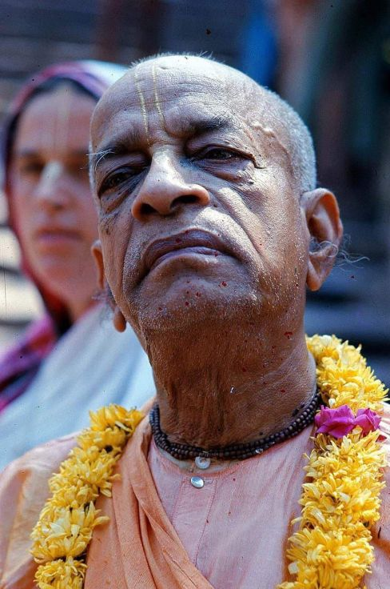

A Big Test

We are sorry to say but even if Prabhupāda's disciples can't fulfill his instructions, the responsibility will be handed down to the grand disciples. But while all the disciples of Prabhupāda are there, we should all try our best to fulfill Prabhupāda's desires. We must put Prabhupāda's desire above Māyā's desire. Māyā gives us one idea and Prabhupāda has given us many ideas. So, whether we give Māyā or Prabhupāda priority is the big test.
~ HH Jayapatāka Swami, Pg 248, A Spiritual Awakening